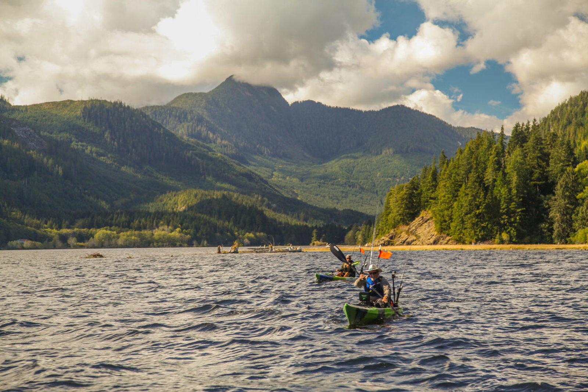
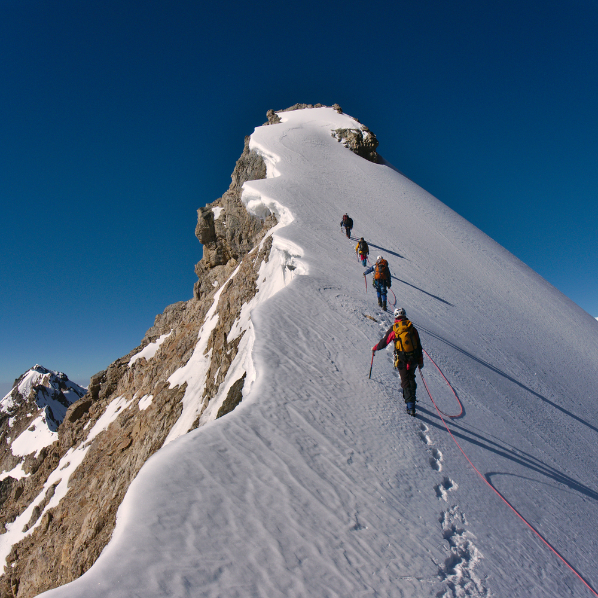

Table of contents
| Trip Name | Description |
|---|---|
| Mystical Forest Retreat | Escape to the heart of an ancient forest, where sunlight filters through the dense canopy, illuminating moss-covered rocks and winding trails. The air smells of damp earth and pine needles, and the only sounds are birdsong and rustling leaves. Welcome to our Mystical Forest Retreat! |
| Coastal Serenity | Imagine rugged cliffs, crashing waves, and salty sea breezes—the Coastal Serenity trip offers a rejuvenating escape by the ocean. Whether you’re a beachcomber, a surfer, or simply seeking tranquility, this coastal haven awaits. |
| Mountain Expedition: Summit Bliss | The Mountain Expedition promises exhilarating climbs, breathtaking vistas, and a sense of accomplishment at every peak. Strap on your boots, adjust your backpack, and let’s conquer the world’s highest summits! |
TRIPS
Mystical Forest Retreat
Why did the squirrel book a treehouse in the mystical forest? Because it wanted a nutty vacation! 🐿️🌲
Escape to the heart of an ancient forest, where sunlight filters through the dense canopy, illuminating moss-covered rocks and winding trails. The air smells of damp earth and pine needles, and the only sounds are birdsong and rustling leaves. Welcome to our Mystical Forest Retreat!
Highlights:
Enchanted Pathways: Follow winding trails that lead to hidden waterfalls, ancient tree groves, and secret clearings. Each step feels like a magical discovery.
Treehouse Accommodation: Stay in cozy treehouses nestled among the branches. Wake up to the gentle sway of leaves and birds perched on your windowsill.
Nighttime Stargazing: As darkness falls, gather around a crackling campfire. Look up—the forest canopy opens to reveal a mesmerizing tapestry of stars.
!Mystical Forest

Coastal Serenity
Why did the crab join the yoga class at the Coastal Serenity retreat? It wanted to perfect its downward-facing shell! 🦀🌅
Imagine rugged cliffs, crashing waves, and salty sea breezes—the Coastal Serenity trip offers a rejuvenating escape by the ocean. Whether you’re a beachcomber, a surfer, or simply seeking tranquility, this coastal haven awaits.
Highlights:
Seaside Villas: Our charming villas perch on cliffs overlooking the turquoise waters. Wake up to sunrise views that steal your breath away.
Beach Yoga: Salute the sun on the sandy shore, with seagulls as your witnesses. Feel the connection between earth, sea, and sky.
Sunset Bonfires: Gather around crackling bonfires as the sun dips below the horizon. Share stories, toast marshmallows, and watch the stars emerge.
!Coastal Serenity
Mountain Expedition: Summit Bliss
Why did the mountain climber bring a ladder? Because he wanted to take his hiking to the next level! 🏔️⛰️
For adventure seekers, the Mountain Expedition promises exhilarating climbs, breathtaking vistas, and a sense of accomplishment at every peak. Strap on your boots, adjust your backpack, and let’s conquer the world’s highest summits!
Highlights:
Base Camp Bonding: Meet fellow climbers from diverse backgrounds. Share stories, laughter, and hot cocoa around the campfire.
Glacier Trekking: Rope up and traverse icy glaciers. The crunch of crampons against snow echoes through the silent wilderness.
Summit Glory: As dawn breaks, reach the summit. The world unfolds beneath you—a patchwork of valleys, clouds, and distant peaks.
!Mountain Expedition
